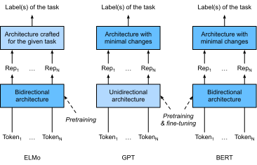
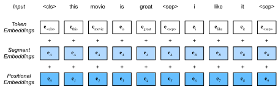

Bidirectional Encoder Representations from Transformers (BERT)¶
Chúng ta đã giới thiệu một số mô hình word embedding cho hiểu ngôn ngữ tự nhiên. Sau khi tiền huấn luyện, đầu ra có thể được xem như một ma trận, trong đó mỗi hàng là một vector biểu diễn một từ trong một từ vựng định trước. Thực ra, tất cả các mô hình word embedding này đều không phụ thuộc ngữ cảnh. Hãy bắt đầu bằng cách minh họa tính chất này.
Từ Không Phụ Thuộc Ngữ Cảnh Đến Nhạy Ngữ Cảnh¶
Nhắc lại các thí nghiệm trong sec_word2vec_pretraining và sec_synonyms. Chẳng hạn, cả word2vec và GloVe đều gán cùng một vector đã tiền huấn luyện cho cùng một từ bất kể ngữ cảnh của từ đó (nếu có). Về hình thức, một biểu diễn không phụ thuộc ngữ cảnh của bất kỳ token \(x\) nào là một hàm \(f(x)\) chỉ nhận \(x\) làm đầu vào. Với sự phong phú của đa nghĩa và ngữ nghĩa phức tạp trong ngôn ngữ tự nhiên, các biểu diễn không phụ thuộc ngữ cảnh có những hạn chế rõ ràng. Ví dụ, từ "crane" trong các ngữ cảnh "a crane is flying" và "a crane driver came" có ý nghĩa hoàn toàn khác nhau; do đó, cùng một từ có thể được gán các biểu diễn khác nhau tùy theo ngữ cảnh.
Điều này thúc đẩy sự phát triển của các biểu diễn từ nhạy ngữ cảnh, trong đó biểu diễn của từ phụ thuộc vào ngữ cảnh của chúng. Do đó, một biểu diễn nhạy ngữ cảnh của token \(x\) là một hàm \(f(x, c(x))\) phụ thuộc vào cả \(x\) và ngữ cảnh \(c(x)\) của nó. Các biểu diễn nhạy ngữ cảnh phổ biến bao gồm TagLM (language-model-augmented sequence tagger) [Peters.Ammar.Bhagavatula.ea.2017], CoVe (Context Vectors) [McCann.Bradbury.Xiong.ea.2017], và ELMo (Embeddings from Language Models) [Peters.Neumann.Iyyer.ea.2018].
Ví dụ, bằng cách nhận toàn bộ chuỗi làm đầu vào, ELMo là một hàm gán một biểu diễn cho mỗi từ từ chuỗi đầu vào. Cụ thể, ELMo kết hợp tất cả các biểu diễn tầng trung gian từ LSTM hai chiều đã tiền huấn luyện làm biểu diễn đầu ra. Sau đó, biểu diễn ELMo sẽ được thêm vào mô hình có giám sát hiện có của một tác vụ downstream như các đặc trưng bổ sung, chẳng hạn bằng cách nối biểu diễn ELMo và biểu diễn gốc (ví dụ, GloVe) của token trong mô hình hiện có. Một mặt, tất cả trọng số trong mô hình LSTM hai chiều đã tiền huấn luyện được đóng băng sau khi thêm biểu diễn ELMo. Mặt khác, mô hình có giám sát hiện có được tùy chỉnh riêng cho một tác vụ nhất định. Tận dụng các mô hình tốt nhất khác nhau cho các tác vụ khác nhau tại thời điểm đó, việc thêm ELMo đã cải thiện mức tốt nhất hiện có trên sáu tác vụ xử lý ngôn ngữ tự nhiên: phân tích cảm xúc, suy luận ngôn ngữ tự nhiên, gán vai nghĩa, giải quyết đồng tham chiếu, nhận dạng thực thể có tên, và hỏi đáp.
Từ Đặc Thù Tác Vụ Đến Không Phụ Thuộc Tác Vụ¶
Mặc dù ELMo đã cải thiện đáng kể các lời giải cho một tập đa dạng các tác vụ xử lý ngôn ngữ tự nhiên, mỗi lời giải vẫn phụ thuộc vào một kiến trúc đặc thù tác vụ. Tuy nhiên, việc thiết kế một kiến trúc riêng cho từng tác vụ xử lý ngôn ngữ tự nhiên là không hề đơn giản trong thực tế. Mô hình GPT (Generative Pre-Training) đại diện cho một nỗ lực thiết kế một mô hình không phụ thuộc tác vụ tổng quát cho các biểu diễn nhạy ngữ cảnh [Radford.Narasimhan.Salimans.ea.2018]. Được xây dựng trên một decoder Transformer, GPT tiền huấn luyện một mô hình ngôn ngữ sẽ được dùng để biểu diễn các chuỗi văn bản. Khi áp dụng GPT cho một tác vụ downstream, đầu ra của mô hình ngôn ngữ sẽ được đưa vào một tầng đầu ra tuyến tính được thêm vào để dự đoán nhãn của tác vụ. Trái ngược rõ rệt với ELMo vốn đóng băng các tham số của mô hình đã tiền huấn luyện, GPT tinh chỉnh tất cả tham số trong decoder Transformer đã tiền huấn luyện trong quá trình học có giám sát của tác vụ downstream. GPT được đánh giá trên mười hai tác vụ về suy luận ngôn ngữ tự nhiên, hỏi đáp, độ tương đồng câu, và phân loại, và cải thiện mức tốt nhất hiện có ở chín tác vụ với thay đổi tối thiểu đối với kiến trúc mô hình.
Tuy nhiên, do bản chất tự hồi quy của các mô hình ngôn ngữ, GPT chỉ nhìn về phía trước (từ trái sang phải). Trong các ngữ cảnh "i went to the bank to deposit cash" và "i went to the bank to sit down", vì "bank" nhạy với ngữ cảnh bên trái của nó, GPT sẽ trả về cùng một biểu diễn cho "bank", dù nó có các ý nghĩa khác nhau.
BERT: Kết Hợp Điểm Mạnh Của Hai Hướng¶
Như đã thấy, ELMo mã hóa ngữ cảnh hai chiều nhưng dùng các kiến trúc đặc thù tác vụ; trong khi GPT không phụ thuộc tác vụ nhưng mã hóa ngữ cảnh từ trái sang phải. Kết hợp điểm mạnh của cả hai, BERT (Bidirectional Encoder Representations from Transformers) mã hóa ngữ cảnh hai chiều và yêu cầu thay đổi kiến trúc tối thiểu cho nhiều tác vụ xử lý ngôn ngữ tự nhiên [Devlin.Chang.Lee.ea.2018]. Dùng một encoder Transformer đã tiền huấn luyện, BERT có thể biểu diễn bất kỳ token nào dựa trên ngữ cảnh hai chiều của nó. Trong quá trình học có giám sát của các tác vụ downstream, BERT tương tự GPT ở hai khía cạnh. Thứ nhất, biểu diễn BERT sẽ được đưa vào một tầng đầu ra được thêm vào, với thay đổi tối thiểu đối với kiến trúc mô hình tùy theo bản chất của tác vụ, chẳng hạn dự đoán cho từng token so với dự đoán cho toàn bộ chuỗi. Thứ hai, tất cả tham số của encoder Transformer đã tiền huấn luyện được tinh chỉnh, trong khi tầng đầu ra bổ sung sẽ được huấn luyện từ đầu. fig_elmo-gpt-bert mô tả các khác biệt giữa ELMo, GPT, và BERT.

BERT tiếp tục cải thiện mức tốt nhất hiện có trên mười một tác vụ xử lý ngôn ngữ tự nhiên thuộc các nhóm rộng gồm (i) phân loại một văn bản (ví dụ, phân tích cảm xúc), (ii) phân loại cặp văn bản (ví dụ, suy luận ngôn ngữ tự nhiên), (iii) hỏi đáp, (iv) gán nhãn văn bản (ví dụ, nhận dạng thực thể có tên). Đều được đề xuất năm 2018, từ ELMo nhạy ngữ cảnh đến GPT và BERT không phụ thuộc tác vụ, việc tiền huấn luyện các biểu diễn sâu cho ngôn ngữ tự nhiên, đơn giản về mặt khái niệm nhưng mạnh mẽ về thực nghiệm, đã cách mạng hóa các lời giải cho nhiều tác vụ xử lý ngôn ngữ tự nhiên.
Trong phần còn lại của chương này, chúng ta sẽ đi sâu vào tiền huấn luyện BERT. Khi các ứng dụng xử lý ngôn ngữ tự nhiên được giải thích trong chap_nlp_app, chúng ta sẽ minh họa việc tinh chỉnh BERT cho các ứng dụng downstream.
#@tab mxnet
from d2l import mxnet as d2l
from mxnet import gluon, np, npx
from mxnet.gluon import nn
npx.set_np()
[Biểu Diễn Đầu Vào]¶
Trong xử lý ngôn ngữ tự nhiên, một số tác vụ (ví dụ, phân tích cảm xúc) nhận một văn bản đơn làm đầu vào, trong khi một số tác vụ khác (ví dụ, suy luận ngôn ngữ tự nhiên) nhận đầu vào là một cặp chuỗi văn bản. Chuỗi đầu vào BERT biểu diễn rõ ràng cả văn bản đơn và cặp văn bản. Trong trường hợp thứ nhất, chuỗi đầu vào BERT là phép nối của token phân loại đặc biệt “<cls>”, các token của một chuỗi văn bản, và token phân tách đặc biệt “<sep>”. Trong trường hợp thứ hai, chuỗi đầu vào BERT là phép nối của “<cls>”, các token của chuỗi văn bản thứ nhất, “<sep>”, các token của chuỗi văn bản thứ hai, và “<sep>”. Chúng ta sẽ nhất quán phân biệt thuật ngữ "chuỗi đầu vào BERT" với các loại "chuỗi" khác. Chẳng hạn, một chuỗi đầu vào BERT có thể bao gồm một chuỗi văn bản hoặc hai chuỗi văn bản.
Để phân biệt các cặp văn bản, các segment embedding được học \(\mathbf{e}_A\) và \(\mathbf{e}_B\) được cộng lần lượt vào token embedding của chuỗi thứ nhất và chuỗi thứ hai. Với đầu vào văn bản đơn, chỉ \(\mathbf{e}_A\) được dùng.
Hàm get_tokens_and_segments sau nhận một câu hoặc hai câu
làm đầu vào, sau đó trả về các token của chuỗi đầu vào BERT
và các ID segment tương ứng của chúng.
#@tab all
def get_tokens_and_segments(tokens_a, tokens_b=None):
"""Get tokens of the BERT input sequence and their segment IDs."""
tokens = ['<cls>'] + tokens_a + ['<sep>']
# 0 and 1 are marking segment A and B, respectively
segments = [0] * (len(tokens_a) + 2)
if tokens_b is not None:
tokens += tokens_b + ['<sep>']
segments += [1] * (len(tokens_b) + 1)
return tokens, segments
BERT chọn encoder Transformer làm kiến trúc hai chiều của nó. Như thường thấy trong encoder Transformer, positional embedding được cộng tại mọi vị trí của chuỗi đầu vào BERT. Tuy nhiên, khác với encoder Transformer gốc, BERT dùng positional embedding có thể học được. Tóm lại, fig_bert-input cho thấy embedding của chuỗi đầu vào BERT là tổng của token embedding, segment embedding, và positional embedding.

Lớp [BERTEncoder] sau tương tự lớp TransformerEncoder
đã hiện thực trong sec_transformer.
Khác với TransformerEncoder, BERTEncoder dùng
segment embedding và positional embedding có thể học được.
#@tab mxnet
class BERTEncoder(nn.Block):
"""BERT encoder."""
def __init__(self, vocab_size, num_hiddens, ffn_num_hiddens, num_heads,
num_blks, dropout, max_len=1000, **kwargs):
super(BERTEncoder, self).__init__(**kwargs)
self.token_embedding = nn.Embedding(vocab_size, num_hiddens)
self.segment_embedding = nn.Embedding(2, num_hiddens)
self.blks = nn.Sequential()
for _ in range(num_blks):
self.blks.add(d2l.TransformerEncoderBlock(
num_hiddens, ffn_num_hiddens, num_heads, dropout, True))
# In BERT, positional embeddings are learnable, thus we create a
# parameter of positional embeddings that are long enough
self.pos_embedding = self.params.get('pos_embedding',
shape=(1, max_len, num_hiddens))
def forward(self, tokens, segments, valid_lens):
# Shape of `X` remains unchanged in the following code snippet:
# (batch size, max sequence length, `num_hiddens`)
X = self.token_embedding(tokens) + self.segment_embedding(segments)
X = X + self.pos_embedding.data(ctx=X.ctx)[:, :X.shape[1], :]
for blk in self.blks:
X = blk(X, valid_lens)
return X
#@tab pytorch
class BERTEncoder(nn.Module):
"""BERT encoder."""
def __init__(self, vocab_size, num_hiddens, ffn_num_hiddens, num_heads,
num_blks, dropout, max_len=1000, **kwargs):
super(BERTEncoder, self).__init__(**kwargs)
self.token_embedding = nn.Embedding(vocab_size, num_hiddens)
self.segment_embedding = nn.Embedding(2, num_hiddens)
self.blks = nn.Sequential()
for i in range(num_blks):
self.blks.add_module(f"{i}", d2l.TransformerEncoderBlock(
num_hiddens, ffn_num_hiddens, num_heads, dropout, True))
# In BERT, positional embeddings are learnable, thus we create a
# parameter of positional embeddings that are long enough
self.pos_embedding = nn.Parameter(torch.randn(1, max_len,
num_hiddens))
def forward(self, tokens, segments, valid_lens):
# Shape of `X` remains unchanged in the following code snippet:
# (batch size, max sequence length, `num_hiddens`)
X = self.token_embedding(tokens) + self.segment_embedding(segments)
X = X + self.pos_embedding[:, :X.shape[1], :]
for blk in self.blks:
X = blk(X, valid_lens)
return X
Giả sử kích thước từ vựng là 10000.
Để minh họa [suy luận xuôi của BERTEncoder],
hãy tạo một thực thể của nó và khởi tạo các tham số.
#@tab mxnet
vocab_size, num_hiddens, ffn_num_hiddens, num_heads = 10000, 768, 1024, 4
num_blks, dropout = 2, 0.2
encoder = BERTEncoder(vocab_size, num_hiddens, ffn_num_hiddens, num_heads,
num_blks, dropout)
encoder.initialize()
#@tab pytorch
vocab_size, num_hiddens, ffn_num_hiddens, num_heads = 10000, 768, 1024, 4
ffn_num_input, num_blks, dropout = 768, 2, 0.2
encoder = BERTEncoder(vocab_size, num_hiddens, ffn_num_hiddens, num_heads,
num_blks, dropout)
Chúng ta định nghĩa tokens là 2 chuỗi đầu vào BERT có độ dài 8,
trong đó mỗi token là một chỉ số của từ vựng.
Suy luận xuôi của BERTEncoder với đầu vào tokens
trả về kết quả đã mã hóa, trong đó mỗi token được biểu diễn bằng một vector
có độ dài được định trước bởi siêu tham số num_hiddens.
Siêu tham số này thường được gọi là hidden size
(số đơn vị ẩn) của encoder Transformer.
#@tab mxnet
tokens = np.random.randint(0, vocab_size, (2, 8))
segments = np.array([[0, 0, 0, 0, 1, 1, 1, 1], [0, 0, 0, 1, 1, 1, 1, 1]])
encoded_X = encoder(tokens, segments, None)
encoded_X.shape
#@tab pytorch
tokens = torch.randint(0, vocab_size, (2, 8))
segments = torch.tensor([[0, 0, 0, 0, 1, 1, 1, 1], [0, 0, 0, 1, 1, 1, 1, 1]])
encoded_X = encoder(tokens, segments, None)
encoded_X.shape
Các Tác Vụ Tiền Huấn Luyện¶
Suy luận xuôi của BERTEncoder cho ra biểu diễn BERT
của mỗi token trong văn bản đầu vào và các token đặc biệt
được chèn vào “<cls>” và “<seq>”.
Tiếp theo, chúng ta sẽ dùng các biểu diễn này để tính hàm mất mát
cho tiền huấn luyện BERT.
Tiền huấn luyện gồm hai tác vụ sau:
masked language modeling và next sentence prediction.
[Masked Language Modeling]¶
Như đã minh họa trong sec_language-model, một mô hình ngôn ngữ dự đoán một token bằng ngữ cảnh bên trái của nó. Để mã hóa ngữ cảnh hai chiều nhằm biểu diễn mỗi token, BERT che ngẫu nhiên các token và dùng các token từ ngữ cảnh hai chiều để dự đoán các token bị che theo cách tự giám sát. Tác vụ này được gọi là masked language model.
Trong tác vụ tiền huấn luyện này, 15% token sẽ được chọn ngẫu nhiên làm các token bị che để dự đoán. Để dự đoán một token bị che mà không gian lận bằng cách dùng nhãn, một cách tiếp cận trực tiếp là luôn thay nó bằng token đặc biệt “<mask>” trong chuỗi đầu vào BERT. Tuy nhiên, token đặc biệt nhân tạo “<mask>” sẽ không bao giờ xuất hiện trong tinh chỉnh. Để tránh sự không khớp như vậy giữa tiền huấn luyện và tinh chỉnh, nếu một token bị che để dự đoán (ví dụ, "great" được chọn để che và dự đoán trong "this movie is great"), trong đầu vào nó sẽ được thay bằng:
- một token đặc biệt “<mask>” trong 80% thời gian (ví dụ, "this movie is great" trở thành "this movie is <mask>");
- một token ngẫu nhiên trong 10% thời gian (ví dụ, "this movie is great" trở thành "this movie is drink");
- token nhãn không đổi trong 10% thời gian (ví dụ, "this movie is great" vẫn là "this movie is great").
Lưu ý rằng trong 10% của 15% thời gian, một token ngẫu nhiên được chèn vào. Nhiễu thỉnh thoảng này khuyến khích BERT ít thiên lệch hơn về token bị che (đặc biệt khi token nhãn vẫn không đổi) trong mã hóa ngữ cảnh hai chiều.
Chúng ta hiện thực lớp MaskLM sau để dự đoán các token bị che
trong tác vụ masked language model của tiền huấn luyện BERT.
Dự đoán dùng một MLP một tầng ẩn (self.mlp).
Trong suy luận xuôi, nó nhận hai đầu vào:
kết quả đã mã hóa của BERTEncoder và các vị trí token cần dự đoán.
Đầu ra là các kết quả dự đoán tại những vị trí này.
#@tab mxnet
class MaskLM(nn.Block):
"""The masked language model task of BERT."""
def __init__(self, vocab_size, num_hiddens, **kwargs):
super(MaskLM, self).__init__(**kwargs)
self.mlp = nn.Sequential()
self.mlp.add(
nn.Dense(num_hiddens, flatten=False, activation='relu'))
self.mlp.add(nn.LayerNorm())
self.mlp.add(nn.Dense(vocab_size, flatten=False))
def forward(self, X, pred_positions):
num_pred_positions = pred_positions.shape[1]
pred_positions = pred_positions.reshape(-1)
batch_size = X.shape[0]
batch_idx = np.arange(0, batch_size)
# Suppose that `batch_size` = 2, `num_pred_positions` = 3, then
# `batch_idx` is `np.array([0, 0, 0, 1, 1, 1])`
batch_idx = np.repeat(batch_idx, num_pred_positions)
masked_X = X[batch_idx, pred_positions]
masked_X = masked_X.reshape((batch_size, num_pred_positions, -1))
mlm_Y_hat = self.mlp(masked_X)
return mlm_Y_hat
#@tab pytorch
class MaskLM(nn.Module):
"""The masked language model task of BERT."""
def __init__(self, vocab_size, num_hiddens, **kwargs):
super(MaskLM, self).__init__(**kwargs)
self.mlp = nn.Sequential(nn.LazyLinear(num_hiddens),
nn.ReLU(),
nn.LayerNorm(num_hiddens),
nn.LazyLinear(vocab_size))
def forward(self, X, pred_positions):
num_pred_positions = pred_positions.shape[1]
pred_positions = pred_positions.reshape(-1)
batch_size = X.shape[0]
batch_idx = torch.arange(0, batch_size)
# Suppose that `batch_size` = 2, `num_pred_positions` = 3, then
# `batch_idx` is `torch.tensor([0, 0, 0, 1, 1, 1])`
batch_idx = torch.repeat_interleave(batch_idx, num_pred_positions)
masked_X = X[batch_idx, pred_positions]
masked_X = masked_X.reshape((batch_size, num_pred_positions, -1))
mlm_Y_hat = self.mlp(masked_X)
return mlm_Y_hat
Để minh họa [suy luận xuôi của MaskLM],
chúng ta tạo thực thể mlm của nó và khởi tạo nó.
Nhắc lại rằng encoded_X từ suy luận xuôi của BERTEncoder
biểu diễn 2 chuỗi đầu vào BERT.
Chúng ta định nghĩa mlm_positions là 3 chỉ số cần dự đoán trong mỗi chuỗi đầu vào BERT của encoded_X.
Suy luận xuôi của mlm trả về các kết quả dự đoán mlm_Y_hat
tại tất cả các vị trí bị che mlm_positions của encoded_X.
Với mỗi dự đoán, kích thước của kết quả bằng kích thước từ vựng.
#@tab mxnet
mlm = MaskLM(vocab_size, num_hiddens)
mlm.initialize()
mlm_positions = np.array([[1, 5, 2], [6, 1, 5]])
mlm_Y_hat = mlm(encoded_X, mlm_positions)
mlm_Y_hat.shape
#@tab pytorch
mlm = MaskLM(vocab_size, num_hiddens)
mlm_positions = torch.tensor([[1, 5, 2], [6, 1, 5]])
mlm_Y_hat = mlm(encoded_X, mlm_positions)
mlm_Y_hat.shape
Với các nhãn ground truth mlm_Y của các token dự đoán mlm_Y_hat dưới mask,
chúng ta có thể tính mất mát cross-entropy của tác vụ masked language model trong tiền huấn luyện BERT.
#@tab mxnet
mlm_Y = np.array([[7, 8, 9], [10, 20, 30]])
loss = gluon.loss.SoftmaxCrossEntropyLoss()
mlm_l = loss(mlm_Y_hat.reshape((-1, vocab_size)), mlm_Y.reshape(-1))
mlm_l.shape
#@tab pytorch
mlm_Y = torch.tensor([[7, 8, 9], [10, 20, 30]])
loss = nn.CrossEntropyLoss(reduction='none')
mlm_l = loss(mlm_Y_hat.reshape((-1, vocab_size)), mlm_Y.reshape(-1))
mlm_l.shape
[Next Sentence Prediction]¶
Mặc dù masked language modeling có thể mã hóa ngữ cảnh hai chiều để biểu diễn từ, nó không mô hình hóa tường minh quan hệ logic giữa các cặp văn bản. Để giúp hiểu quan hệ giữa hai chuỗi văn bản, BERT xét một tác vụ phân loại nhị phân, next sentence prediction, trong quá trình tiền huấn luyện. Khi sinh các cặp câu cho tiền huấn luyện, trong một nửa thời gian, chúng thực sự là các câu liên tiếp với nhãn "True"; trong nửa thời gian còn lại, câu thứ hai được lấy mẫu ngẫu nhiên từ kho ngữ liệu với nhãn "False".
Lớp NextSentencePred sau dùng một MLP một tầng ẩn
để dự đoán liệu câu thứ hai có phải là câu tiếp theo của câu thứ nhất
trong chuỗi đầu vào BERT hay không.
Nhờ self-attention trong encoder Transformer,
biểu diễn BERT của token đặc biệt “<cls>”
mã hóa cả hai câu từ đầu vào.
Do đó, tầng đầu ra (self.output) của bộ phân loại MLP nhận X làm đầu vào,
trong đó X là đầu ra của tầng ẩn MLP mà đầu vào là token “<cls>” đã mã hóa.
#@tab mxnet
class NextSentencePred(nn.Block):
"""The next sentence prediction task of BERT."""
def __init__(self, **kwargs):
super(NextSentencePred, self).__init__(**kwargs)
self.output = nn.Dense(2)
def forward(self, X):
# `X` shape: (batch size, `num_hiddens`)
return self.output(X)
#@tab pytorch
class NextSentencePred(nn.Module):
"""The next sentence prediction task of BERT."""
def __init__(self, **kwargs):
super(NextSentencePred, self).__init__(**kwargs)
self.output = nn.LazyLinear(2)
def forward(self, X):
# `X` shape: (batch size, `num_hiddens`)
return self.output(X)
Chúng ta có thể thấy rằng [suy luận xuôi của một thực thể NextSentencePred]
trả về các dự đoán nhị phân cho mỗi chuỗi đầu vào BERT.
#@tab pytorch
# PyTorch by default will not flatten the tensor as seen in mxnet where, if
# flatten=True, all but the first axis of input data are collapsed together
encoded_X = torch.flatten(encoded_X, start_dim=1)
# input_shape for NSP: (batch size, `num_hiddens`)
nsp = NextSentencePred()
nsp_Y_hat = nsp(encoded_X)
nsp_Y_hat.shape
Mất mát cross-entropy của 2 phép phân loại nhị phân cũng có thể được tính.
Điều đáng chú ý là tất cả các nhãn trong cả hai tác vụ tiền huấn luyện nói trên có thể được lấy một cách tầm thường từ kho ngữ liệu tiền huấn luyện mà không cần gán nhãn thủ công. BERT gốc đã được tiền huấn luyện trên phép nối của BookCorpus [Zhu.Kiros.Zemel.ea.2015] và Wikipedia tiếng Anh. Hai kho ngữ liệu văn bản này rất lớn: chúng lần lượt có 800 triệu từ và 2.5 tỷ từ.
[Gộp Tất Cả Lại]¶
Khi tiền huấn luyện BERT, hàm mất mát cuối cùng là tổ hợp tuyến tính của
cả hàm mất mát cho masked language modeling và next sentence prediction.
Bây giờ chúng ta có thể định nghĩa lớp BERTModel bằng cách khởi tạo ba lớp
BERTEncoder, MaskLM, và NextSentencePred.
Suy luận xuôi trả về các biểu diễn BERT đã mã hóa encoded_X,
các dự đoán masked language modeling mlm_Y_hat,
và các dự đoán next sentence nsp_Y_hat.
#@tab mxnet
class BERTModel(nn.Block):
"""The BERT model."""
def __init__(self, vocab_size, num_hiddens, ffn_num_hiddens, num_heads,
num_blks, dropout, max_len=1000):
super(BERTModel, self).__init__()
self.encoder = BERTEncoder(vocab_size, num_hiddens, ffn_num_hiddens,
num_heads, num_blks, dropout, max_len)
self.hidden = nn.Dense(num_hiddens, activation='tanh')
self.mlm = MaskLM(vocab_size, num_hiddens)
self.nsp = NextSentencePred()
def forward(self, tokens, segments, valid_lens=None, pred_positions=None):
encoded_X = self.encoder(tokens, segments, valid_lens)
if pred_positions is not None:
mlm_Y_hat = self.mlm(encoded_X, pred_positions)
else:
mlm_Y_hat = None
# The hidden layer of the MLP classifier for next sentence prediction.
# 0 is the index of the '<cls>' token
nsp_Y_hat = self.nsp(self.hidden(encoded_X[:, 0, :]))
return encoded_X, mlm_Y_hat, nsp_Y_hat
#@tab pytorch
class BERTModel(nn.Module):
"""The BERT model."""
def __init__(self, vocab_size, num_hiddens, ffn_num_hiddens,
num_heads, num_blks, dropout, max_len=1000):
super(BERTModel, self).__init__()
self.encoder = BERTEncoder(vocab_size, num_hiddens, ffn_num_hiddens,
num_heads, num_blks, dropout,
max_len=max_len)
self.hidden = nn.Sequential(nn.LazyLinear(num_hiddens),
nn.Tanh())
self.mlm = MaskLM(vocab_size, num_hiddens)
self.nsp = NextSentencePred()
def forward(self, tokens, segments, valid_lens=None, pred_positions=None):
encoded_X = self.encoder(tokens, segments, valid_lens)
if pred_positions is not None:
mlm_Y_hat = self.mlm(encoded_X, pred_positions)
else:
mlm_Y_hat = None
# The hidden layer of the MLP classifier for next sentence prediction.
# 0 is the index of the '<cls>' token
nsp_Y_hat = self.nsp(self.hidden(encoded_X[:, 0, :]))
return encoded_X, mlm_Y_hat, nsp_Y_hat
Tóm Tắt¶
- Các mô hình word embedding như word2vec và GloVe không phụ thuộc ngữ cảnh. Chúng gán cùng một vector đã tiền huấn luyện cho cùng một từ bất kể ngữ cảnh của từ đó (nếu có). Điều này khiến chúng khó xử lý tốt đa nghĩa hoặc ngữ nghĩa phức tạp trong ngôn ngữ tự nhiên.
- Với các biểu diễn từ nhạy ngữ cảnh như ELMo và GPT, biểu diễn của từ phụ thuộc vào ngữ cảnh của chúng.
- ELMo mã hóa ngữ cảnh hai chiều nhưng dùng các kiến trúc đặc thù tác vụ (tuy nhiên, việc thiết kế một kiến trúc riêng cho từng tác vụ xử lý ngôn ngữ tự nhiên là không hề đơn giản trong thực tế); trong khi GPT không phụ thuộc tác vụ nhưng mã hóa ngữ cảnh từ trái sang phải.
- BERT kết hợp điểm mạnh của cả hai hướng: nó mã hóa ngữ cảnh hai chiều và yêu cầu thay đổi kiến trúc tối thiểu cho nhiều tác vụ xử lý ngôn ngữ tự nhiên.
- Embedding của chuỗi đầu vào BERT là tổng của token embedding, segment embedding, và positional embedding.
- Tiền huấn luyện BERT gồm hai tác vụ: masked language modeling và next sentence prediction. Tác vụ trước có thể mã hóa ngữ cảnh hai chiều để biểu diễn từ, trong khi tác vụ sau mô hình hóa tường minh quan hệ logic giữa các cặp văn bản.
Bài Tập¶
- Nếu các yếu tố khác giữ nguyên, một masked language model sẽ cần nhiều hay ít bước tiền huấn luyện hơn để hội tụ so với một mô hình ngôn ngữ từ trái sang phải? Vì sao?
- Trong hiện thực gốc của BERT, mạng feed-forward theo vị trí trong
BERTEncoder(thông quad2l.TransformerEncoderBlock) và tầng kết nối đầy đủ trongMaskLMđều dùng Gaussian error linear unit (GELU) [Hendrycks.Gimpel.2016] làm hàm kích hoạt. Hãy tìm hiểu sự khác biệt giữa GELU và ReLU.